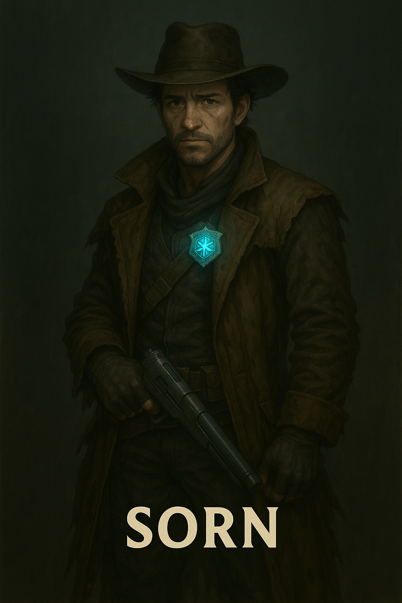

Sorn

Name & Alias: Sorn – The Reformed Hunter
Age / Race / Role: Unknown / Human (Modified) / Tracker, Sentient-Badge Carrier
Appearance: Rugged with short hair and piercing eyes. Wears layered stealth armor and carries a glowing sentient badge at his hip.
Affinities & Energy Types: Tracking Energy, Kinetic
Threat Tier: A-Rank
Core Stats (0–10):
• Power: 6
• Speed: 8
• Technique: 8
• Intelligence: 7
• Defense: 6
• Aura Control: 6
Signature Abilities:
• Echo Trace
• Badge Recall Pulse
• Sensory Cloak Trail
• Kinetic Pinpoint Blast
• Marked Target Pulse
Personality Summary: Stoic and solitary, but deeply guided by a desire for redemption. He trusts his sentient badge more than most people.
Faction or Allegiances: Starbrand Marshals